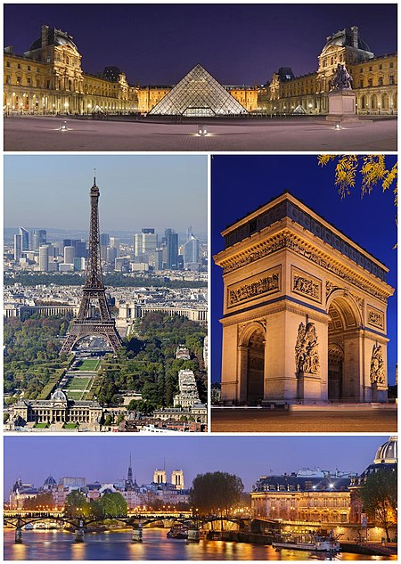

Paris este capitala și cel mai mare oraș din Franța. Orașul este traversat de fluviul Sena, în nordul Franței, în mijlocul regiunii Île-de-France (cunoscută și ca regiunea Paris). Orașul în limitele sale administrative (cele 20 de arondismente) este în mare parte neschimbat din anul 1860, având o populație de 2.211.297 locuitori (ianuarie 2008), iar zona metropolitană Paris are o populație de 12.089.098 locuitori (ianuarie 2008). Este una dintre cele mai populate zone metropolitane din Europa. Parisul a fost unul dintre cele mai mari orașe ale lumii occidentale pentru aproape 1000 de ani, înainte de secolul al XIX-lea și cel mai mare oraș din lume între secolele XVI-XIX. Parisul este astăzi unul dintre cele mai mari centre economice și culturale din lume, iar influența sa politică, educativă, divertisment, mass-media, modă, știință și arte contribuie la considerarea sa drept unul dintre cele mai importante orașe din lume.[3][4][5][6] Acesta găzduiește sediul mai multor organizații internaționale, cum ar fi: UNESCO, Organizația pentru Cooperare și Dezvoltare Economică, Camera Internațională de Comerț sau informalul Club Paris. Parisul este considerat unul dintre cele mai verzi[7] și mai locuibile[8] orașe din Europa. De asemenea este unul dintre cele mai scumpe.[9][10]. Paris și regiunea Paris, cu 552.1 miliarde € în 2009, produc mai mult de un sfert din produsul intern brut al Franței.[11] Conform estimărilor pentru 2008, aglomerația din Paris este cea mai mare din Europa[12] sau al doilea cel mai mare[13] pol economic urban european și al șaselea ca mărime din lume[14]. Regiunea Paris are cea mai mare concentrație de studenți (în învățământul superior) din Uniunea Europeană[15], este prima în Europa în ceea ce privește capacitatea de cercetare și dezvoltare [15] și este considerată una dintre cele mai bune regiuni din lume pentru inovație[16]. Cu aproximativ 17 milioane de turiști străini anual,[17] Paris este cel mai vizitat oraș din lume. Parisul și regiunea sa conțin 3.800 de monumente istorice și patru Locuri din Patrimoniul Mondial UNESCO.[15] 